I keep a running list of hockey things that I want to look into, and now that playoff bubble hockey has begun, with many people discussing what “home field” advantage looks like in a different building with no fans, it seems like a good time to cross off “last change” from the list. My curiosity about the effect of this advantage spawned some analysis that led to the Twitter thread linked here and now this article!
A brief review of NHL rules: At the beginning of each period and after each stoppage, play resumes with a faceoff. There are, on average, 60 faceoffs in a game. One advantage for the home team is that they get the last line change, thus determining the player matchup until one of the teams makes another change. They control the matchup beginning at every faceoff, except those following an icing by the home team (when a player dumps the puck, untouched, over the center line and then the goal line), which happens, on average, four times per game.
All data is from the 2015-2019 seasons and references 5v5 play by the home team in the regular season, unless otherwise indicated.
Introduction
Home teams have historically had a slight advantage over away teams in terms of offense generation. (Throughout, as a proxy for offense generation, I’m using the rate of unblocked shot attempts—i.e., goals, shots on goals, and missed shots—per 60 minutes.) In the 6081 regular season games that form the basis of this analysis, home teams generated 42.6 unblocked shot attempts per 60 minutes at 5v5, while away teams generated 40.7. This difference holds for every season and is a slight but consistent advantage. (When you see “adjusted” statistics in hockey, they’re adjusted for venue as well as score state.)
How much of this advantage might be attributed to the fact that the home team gets the last change and gets to control the matchups for a certain part of the game? To address this, we first need to know how much of the game this actually affects. That is, what percent of the game involves a line matchup orchestrated by the home team? Since every game second can be classified as a “controlled matchup” (i.e., all seconds after a home-team-controlled faceoff, until there is a change) or not, we can calculate this, and it turns out to be pretty consistent across seasons at around 38 percent.
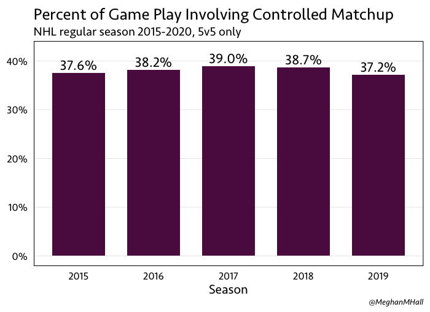
The variation is fairly small, as well: if you separate out this calculation per team, it only varies from 35 to 41 percent. (And if you isolate the matched line to just forward lines or just defense pairs, the matchup time increases to 42 percent.) So this means a majority of the game still involves line matchups that are created on the fly. However, 38% of game play at 5v5—which is, on average, just over 18 minutes per game—is still a significant amount, and having this information means that we can assess the home team in two ways.
- Compare the team to itself: How does a team generate offense when the matchup is controlled versus when it is not? Is the home team better when it gets to pick the lines?
- Compare the team to the other team: When the matchup is controlled, how does the home team generate offense compared to the away team? How much of an advantage do they actually have?
League Averages
Both of those questions, at the league level, can be answered by the graph below.
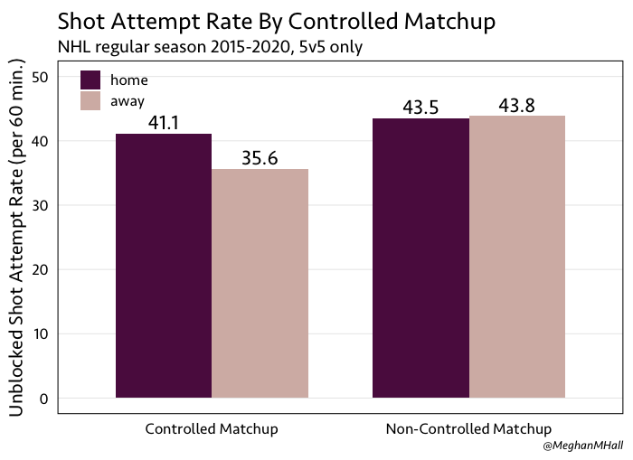
Both the home and away teams do a bit better here, in that their shot rates are higher, when the matchups aren’t controlled. But when they are, as logic might dictate, the home team does better, at 41.1 unblocked shot attempts per 60 minutes compared to 35.6 for the away team. In other words, about 15 percent more offense. (It’s worth noting that these numbers do not change much if you consider a “line matchup” to be either just forward lines or just defense pairs, rather than the entire five-skater group.)
We can also break this down further by the event zone of the faceoff that kicked off the controlled matchup.
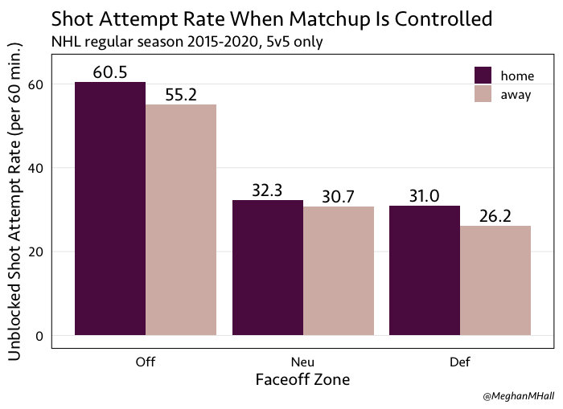
The graph above shows the shot attempt rate when the matchup is controlled. As to be expected, it’s highest when the faceoff is in the offensive zone, and also as to be expected, the home team sees an advantage when compared to the away team: they generate 60.5 shot attempts (per 60 minutes) from an offensive zone faceoff, while the away team generates 55.2 (an advantage of about 10 percent). The home team sees this advantage when the faceoff is in the neutral and the defensive zones, as well, even though less offense overall is generated from starts in those areas. And by shifting the perspective, it’s of course true that the home team also does a better job suppressing shots, as well, when they control the matchup.
Teams and Players
With the league averages as a comparison, we can evaluate individual team-seasons on these same metrics. First, within each team, we can compare controlled matchup game play to game play that doesn’t involve a controlled matchup, for games in which they are the home team. As shown in the earlier graph, home teams do slightly worse when the matchups are controlled, in that their shot rate is depressed by a little over five percent compared to when the matchups are not controlled. Let’s look at the teams that have the biggest difference in their shot rates between those states of play.
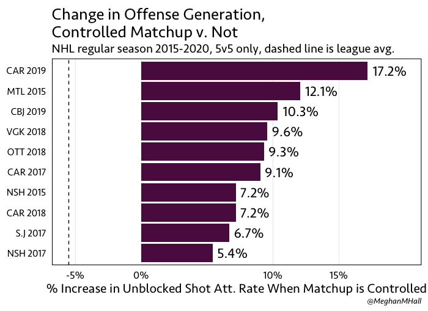 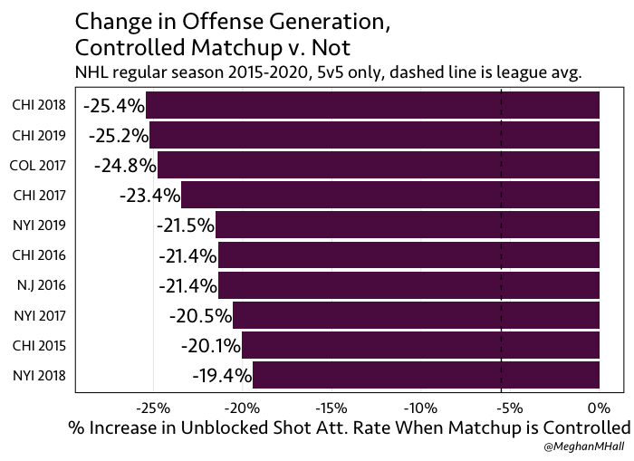
In both graphs, the league average of -5.5 percent is shown with a dashed line. The first graph shows the 10 teams who have the biggest positive difference, while the second shows the 10 teams who have the biggest negative difference. That is, teams like Carolina and Columbus from this season played better than we might expect when they were able to control the matchup, while teams like Chicago and the Islanders (over multiple seasons) played worse.
Next, we can look at team-level data when the matchup is controlled. We already saw that the home team has the advantage there (the league average is 15 percent more offense, as shown above), but we can find out which teams have the largest advantage and which have the smallest. This likely correlates well to overall offensive performance—that is, even when a bad team has control of the matchup, they’re still not very good. And vice versa for the good teams. Shown below are the top 10 and bottom 10 teams, those who have the biggest and smallest advantage over the away team when they control the matchup as the home team. The dashed line is the league average at 15 percent.
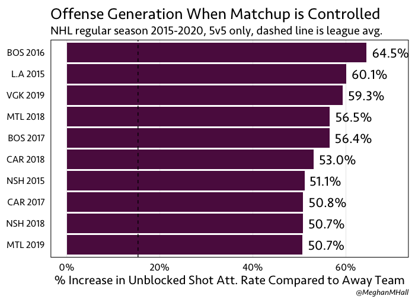 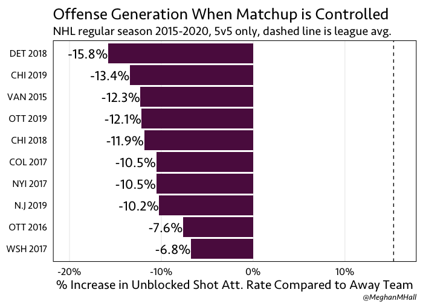
Lastly, mostly just for fun, we can take a look at which players—forward lines and defense pairs—in this time frame have been used most often when the home team has control of the matchup.
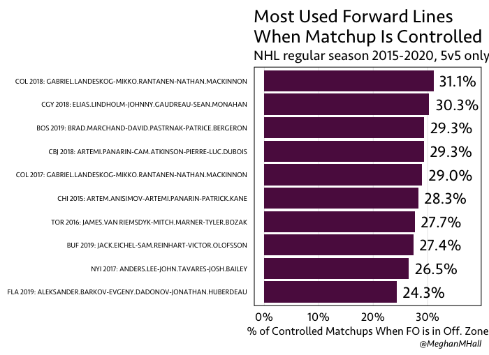 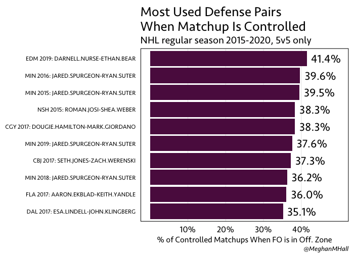
Shown above are the players trusted for offensive zone faceoffs, and shown below are the lines and pairs most commonly used for defensive zone faceoffs, when the home teams want to suppress offense by the away team.
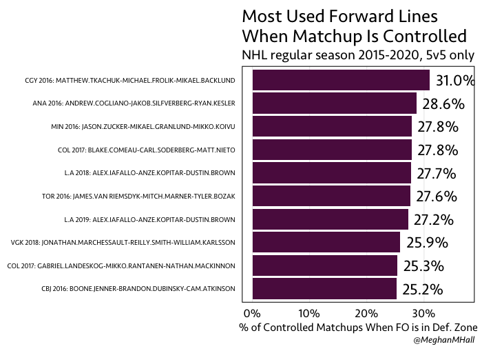 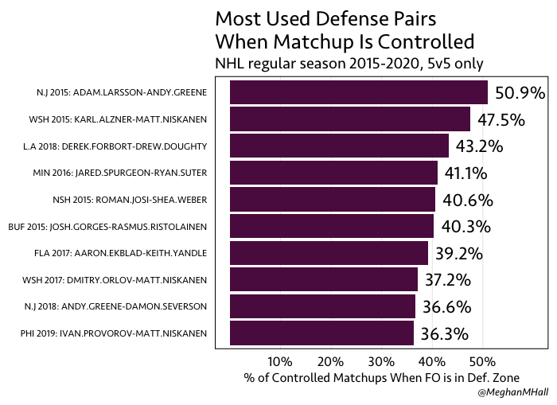
Coaches
To take this one step further, we can look at coaches instead of just individual team-seasons, as the head coach is generally in charge of the line matchups. The data for each coach includes all home games for which he was the head coach over this time frame, possibly combining seasons and teams.
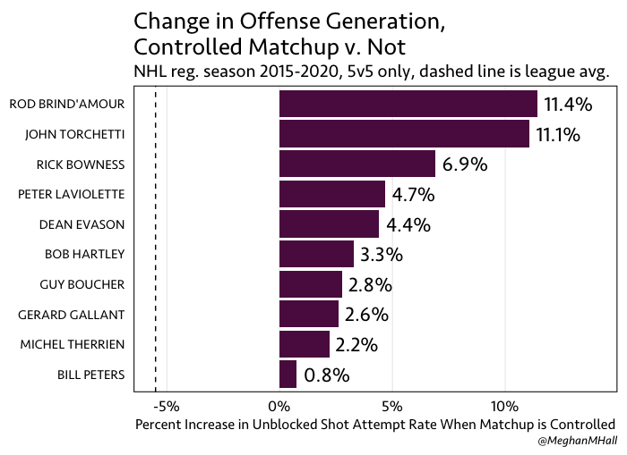
Similar to what we saw previously, the graphs above and below show the top and bottom 10 coaches, respectively, with the greatest difference in controlled play versus uncontrolled. Some coaches, like Rod Brind’Amour, show a greater positive difference with line matching than we might expect, while others, like Jeremy Colliton and Joel Quenneville, are below league average when comparing controlled matchup time to non-controlled matchup time.
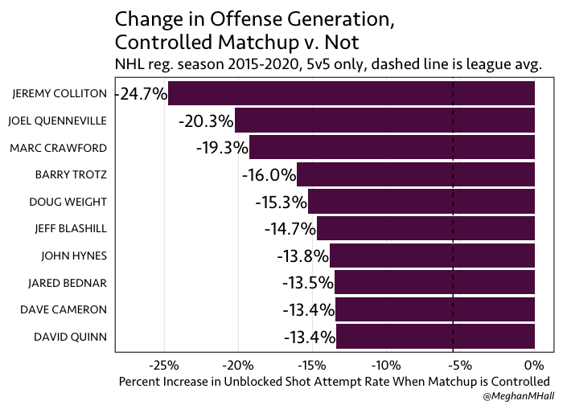
Special Teams
The home team’s technical advantage of the last line change still applies during special teams play, but we might hypothesize that the effect would be smaller since special teams units are usually fairly standard—each team generally has two units each for the power play and penalty kill, and teams are often prepared for these matchups in advance.
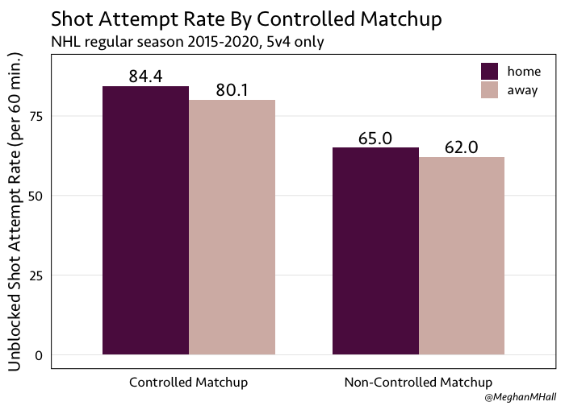
Still, we can explore the effect similarly to how we did so in the first section. In contrast to play at 5v5, in which home teams generate a little less offense when matchups are controlled versus when they are not, at 5v4 home teams generate much more here. This makes sense considering that power plays start with a faceoff, generally in the offensive zone and generally with the top unit, and the initial line matchup likely lasts longer. We can also see that the home team does have a slight overall advantage of around five percent (84.4 unblocked shot attempts per 60 minutes versus 80.1) when the matchup is controlled.
Playoffs
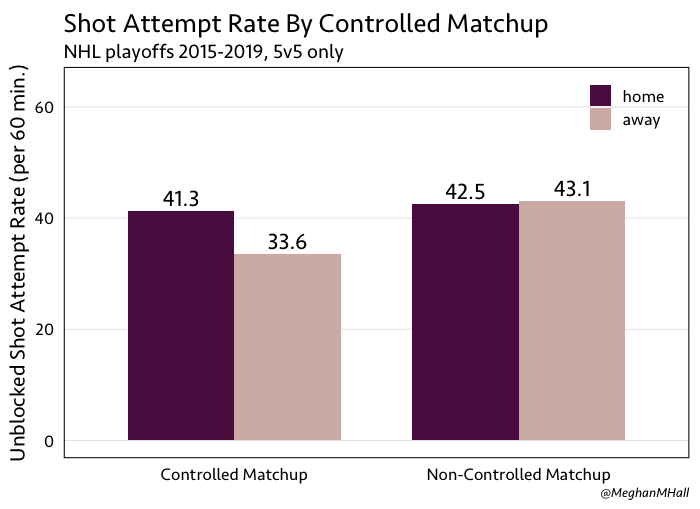
Lastly, we can take a look at playoff games, from the 2015 through 2018 seasons, and compare to what we saw at the beginning with regular season play (both at 5v5). Overall, the difference is not tremendous. In the regular season, home teams saw about a five percent decrease in offense when the matchup was controlled as compared to when it was not; that difference is slightly smaller in the playoffs with a three percent decrease. The home team advantage when the matchup is controlled was shown to be around 15 percent in the regular season, while it increases to about 23 percent in the playoffs (41.3 unblocked shot attempts per 60 minutes for the home team versus 33.6 for the away team).
Conclusion
Since the 2020 playoffs have started in the bubble, with “home” teams playing with no fans and often in a building that is not actually their home building, many fans, writers, and analysts have been publicly wondering about the value of being the home team. These home teams in the bubble are certainly missing some advantages of being in their own arenas (the routine, the energy of the fans, the possible penalty implications), but the advantage of having the last line change—and therefore controlling the matchups for an average of 18 5v5 minutes per game—cannot be discounted.
Play-by-play data sourced via the Evolving-Hockey scraper, position data sourced from their website. Coach data sourced from Natural Stat Trick.